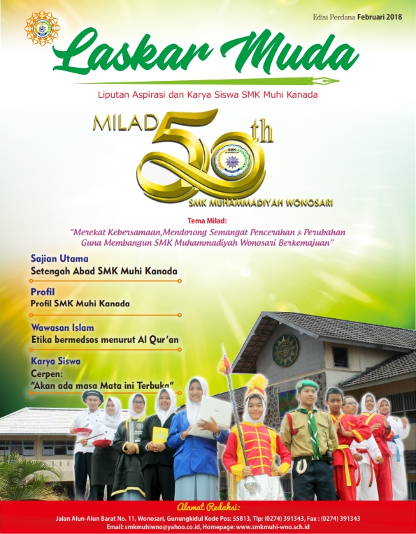

Laskar Muda Edisi 1
Mar 20, 2020Views : 3,487,497
Tepat pada tanggal 28 Februari 2018, SMK Muhammadiyah Wonosari atau SMK Muhi Kanada genap berusia 50 tahun. Banyak sekali perubahan perbaikan yang telah dilakukan SMK Muhammadiyah Wonosari untuk menjadi sekolah unggul. Indikasi sebagai sekolah unggul juga dibuktikan dengan meningkatnya public trust, dimana hingga tahun ajaran 2017/2018 ini terdapat 29 rombongan belajar (rombel) atau sekitar 850 siswa yang telah bergabung di sekolah ini. Saat ini, telah terdapat 6 kompetensi keahlian, yaitu Akuntansi, Jasa Boga, Multimedia, Perbankan Syari’ah, Animasi, dan farmasi yang semuanya telah terakreditasi A. Bahkan, di tahun pelajaran 2018/2019, SMK Muhammadiyah Wonosari akan membuka kompetensi baru yaitu Teknik Sepeda Motor (TSM). Tenaga pendidik di SMK Muhi Kanada sebanyak 63 orang dengan kualifikasi akademik mulai dari S1 hingga S2, sehingga telah professional di bidangnya dan telah dibuktikan dengan berbagai prestasi. Selain itu, hasil tracer study yang dilakukan sekolah, menunjukkan hasil bahwa sebanyak 65% telah terserap di dunia usaha dan dunia industri, 10% melanjutkan ke perguruan tinggi, dan 10 % lainnya berwirausaha. Hal ini mengindikan kualitas unggul lulusan.
Sebagai sekolah berbasis Islam, sekolah ini tidak hanya mencetak generasi bangsa yang cerdas tetapi yang terpenting adalah generasi bangsa yang berkarakter Islam. Sekolah juga terus melakukan adaptasi dan inovasi dalam proses pembelajaran sesuai dengan kurikulum yang berlaku..Segala perubahan dan perbaikan yang dilakukan semata-mata untuk meningkatkan kualitas pembelajaran dan lulusan. Diketahui bahwa dewasa ini, salah satu arah pendidikan SMK yang sedang digencarkan adalah pembelajaran berbasis Teaching Factory yaitu pembelajaran yang memadukan sepenuhnya antara belajar dan bekerja, tidak lagi memisahkan antara tempat penyampaian materi teori dan tempat materi produksi (praktek). Hal ini berarti siswa SMK nantinya akan mengalami pembelajaran yang didesain seperti dunia usaha dan dunia industri yang sebenarnya. Selain lingkungan belajar ala industri, proses pembelajaran juga mengacu pada alur kerja industri, adanya pembentukan budaya dan komitmen kerja bahkan sampai dengan standar keselamatan kerja. Oleh karena itu, SMK Muhammadiyah Wonosari juga melakukan adaptasi dengan mempersiapkan diri menjadi sekolah berbasis Teaching Factory.
Telah banyak lika-liku yang dilewati SMK Muhammadiyah Wonosari dalam perjalanan selama 50 tahun ini. Untuk itu, sebagai bentuk rasa syukur kepada Allah SWT dan kegembiraan atas segenap kebaikan yang dicapai, sekolah menyelenggarakan Semarak Milad Ke-50 Tahun dengan tema “Merekat Kebersamaan, mendorong Semangat Pencerahan & Perubahan Guna Membangun SMK Muhammadiyah Wonosari Berkemajuan”. Semarak Milad Ke-50 Tahun ini terdiri dari berbagai rangkaian acara yaitu, Fun Games (Lomba Internal), Peduli Gunungkidul, Outbond Training dan Volly Persahabatan, Jalan Sehat & Pentas Seni, Sosialisasi Produk Teaching Factory. Launching Majalah Sekolah dan Resepsi (Acara Puncak). Rangkaian acara tersebut dipersiapkan dan dilakukan sebaik-baiknya dengan waktu kurang lebih selama 2 bulan.
Adapun penjelasan dari masing-masing rangkaian adalah sebagai berikut (1) Fun Games (Lomba Internal) merupakan kegiatan lomba yang sifatnya bersenang-senang diikuti oleh seluruh siswa SMK Muhammadiyah Wonosari, yang meliputi lomba kebersihan kelas, tarik tambang, gerak jalan, balap karung dan pecah air; (2) Peduli Gunungkidul merupakan kegiatan keagamaan dan sosial, yang mewujudkan kepedulian sekolah terhadap warga sekolah dan masyarakat. Bentuk kegiatannya meliputi Khataman Qur’an, Kajian “Valentine Dalam Perspektif Islam”, Bersih Lingkungan (Jalan, Sungai dan Masjid), Bakti Sosial Alat Tulis, dan Donor Darah; (3) Outbond Training dan Volly Persahabatan merupakan kegiatan pelatihan outbond dan volly persahabatan oleh SMK Muhammadiyah bersama SMP/MTs binaan sebagai wujud silahturahmi sekaligus sosialisasi dan promosi. Kegiatan ini sedikitnya melibatkan 6 SMP/MTs di seluruh wilayah Gunungkidul; (4) Jalan Sehat dan Pentas Seni merupakan kegiatan yang diikuti oleh seluruh civitas akademika SMK Muhammadiyah Wonosari dengan tujuan meningkatkan kualitas fisik dan mengakomodir minat dan bakat siswa di bidang seni, sekaligus menanamkan rasa cinta terhadap seni terlebih seni tradisional; (5) Sosialisasi Produk Teaching Factory merupakan kegiatan pengenalan produk-produk kreatif siswa SMK Muhammadiyah Wonosari setiap jurusan kepada siswa SMP/MTs termasuk masyarakat umum. Selain tujuan pengenalan, kegiatan ini juga menjadi wadah pemasaran produk. Hal ini sebagai bentuk nyata pembelajaran berbasis teaching factory; (6) Launching Majalah Sekolah merupakan kegiatan penyusunan dan penerbitan majalah sekolah dengan tujuan mengakomodir aspirasi dan karya serta meningkatkan minat baca sekaligus mendukung penyelenggaraan Gerakan Literasi Sekolah (GLS). Majalah sekolah berisis serangkaian artikel tentang profil, aktivitas, prestasi, karya siswa dan sejumlah iklan; dan yang terakhir, (7) Resepsi (Acara Puncak) yaitu kegiatan puncak Semarak Milad ke-50 Tahun yang dilakukan dalam bentuk tasyakuran, dengan melibatkan seluruh civitas akademika SMK Muhammadiyah Wonosari dan sejumlah stakeholder yang memiliki relasi dengan sekolah.